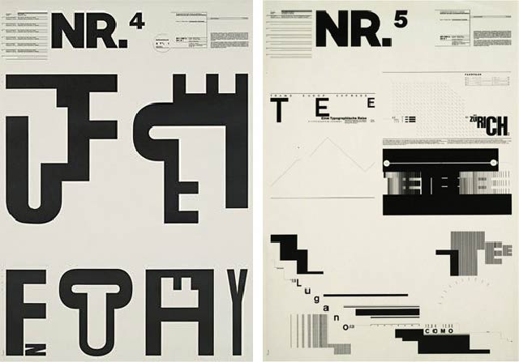
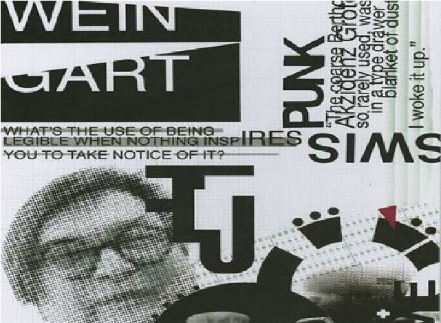

I chose a German Swiss typographer called Wolfgang Weingart to be my design inspiration. I chose Wolfgang as he is internationally well-known and recognized for his different technique with Typography. Also known as “Swiss Typography” or "New Wave". Wolfgang is well-known and characterized as “The father” and teacher of New Wave Typography, however like anyone Wolfgang started like most designers studying.
Early Years
Wolfgang Weingart’s journey started in 1941, where he was born in Salumeria, Southern Germany. In 1958 until 1960 Wolfgang attended the Merz Academy in Stuttgart. Whilst studying Wolfgang started to take interest and become intrigued by typesetting and the process of making linocuts and woodcuts.
In 1948, Weingart moved into Castle Salem where his mother became a doctor to the aristocracy. In total, he spent 13 years of his life in Castle Salem which shaped and changed his views and feelings forever. Although Wolfgang got to experience the beauty and freedom of the valley but also had to experience the last years of WW2; Fuel shortages, food rationing, and constant nerves and trauma. Despite these hardships, Weingart describes his childhood as ‘almost idyllic, surrounded by people who were kind, hardworking and above all, who had “a deep affinity with the earth”. Even after school in the Merz Academy, Weingart wasn't sure of what he wanted to do for a career, although felt determined to do whatever it took to get him on the path he was meant to be on. During school he wasn’t spoon fed but naively thought that good design resulted for using the proper materials such as: proper brushes, scissors, accurate and precise rulers. During his spare time, he worked on projects he created himself and luckily was allowed to use the school facilities to set type and print letterheads, invoices and student cards. This experience was invaluable to him in his later years when he went to study typography at the Basel School of Design as he already knew the basics.
Starting off
After learning the basics, Weingart progressed this onto training to as a typesetter and finally settled with Typography. Wolfgang became very interested in Modern Typography and started to break typography rules developing his own interesting way of seeing things, he felt that modern day typography had become boring and simple, that the work being produced was not reflecting the artists personality or views. As a result of his experiments throughout the world he is also a great Pioneer of Postmodern Graphic design,as he was able to create his own unique way of typography by determining how far the graphic qualities of typography can be pushed, but still retain its meaning. Wolfgang Weingart said;
“The moment I space out a word, I become involved in an exercise in graphics. This in turn developed into a way of teaching. I took ‘Swiss typography’ as my starting point, but then I blew it apart, never forcing a style upon my students. I never intended to create a ‘style’. It is just happened that the students picked up – and misinterpreted – a so called ‘Weingart style’ and spread it around”
Education and History
In 1960 Weingart started a typesetting apprenticeship at the Basel School of Design, Switzerland unaware that this profession would undergo great changes in the near future. As Weingart stated in his book, “My Way to Typography”-
“this training was thorough and disciplined and the respect and awe he developed for each letter and typeset line "was confirmation that his calling has been answered.”
At this time Swiss typography was becoming well-known with great names such as; Josef Muller-Brockmann, Hoffman, Emile Ruder and Odermatt. It is based on mathematical grids which are to clear cut, organized and easy to use when lying out text and images. Other features of this typography are sans serif text, asymmetrical layouts, and photography rather than drawings. This typography also inspired Weingart, and he decided to model his work on it and the ideas behind it. In 1988 Weingart was offered to join the graphic design program for postgraduate professionals, He felt right at home in the type shop of the school, it could be considered more of his laboratory rather than his classroom, It was his only space where he could work on his magic. He used many methods and materials such as curved metal rules, creating circular compositions embedded in plaster, his classes themselves are described as workshops where he is testing to expand models for new typography.
“I was motivated to provoke this stodgy profession and to stretch the type shop's capabilities to the breaking point,”Weingart stated: “Accelerated by the social unrest of our generation, the force behind Swiss Typography and its philosophy of reduction was losing its international hold. My students were inspired, we were on to something different, and we knew it.
Technique
Throughout all of Weingart's experiments he created his own visual language through his Typography style and designs
He pursues an idea until he is sure if it works or not. In the manner of Gutenberg, typesetter, printer and inventor Weingart realizes his publications or posters from beginning to end by himself. He chooses to be involved in the entire process, from the concept to preparation of the film montage for the printer.... When looking through the copy camera or while developing film, new ideas and possibilities become evident, even mistakes trigger fascinating possibilities"“. -Gregory Vines, teaching collague that worked alongside Weingart (Academy of Basel School of Design)
Weingart is well known throughout the world and has taught and lectured in many countries including: America, Australia,New Zealand and Asia, gaining an international reputation for his teaching styles first known as “The Weingart Style”, inspiring many other teachers and gaining many students throughout the world. His teachings were not based on clarity, order etc. He taught his students to explore new possibilities, to push the boundaries and use their imagination to be creative. He distorted words, stretched them, enlarged them and pasted them together. Wolfgang believed that one only needed to use four typefaces. His students misunderstood his teaching as his own style and spread it around as “Weingart style”. This is known now as “New Wave Typography”
His Work
As Weingart had already previously learnt the technique of letter printing throughout his career, his work with typography became more experimental which led to some well-known projects and works. One of his well-known projects was “Round Compositions”. One day Weingart dropped a drawer full of heavy type and scattered them over the floor. Rather than repacking them, he put them into a round cardboard ring, in no particular order but facing upwards. This gave him two printable surfaces, one on the top with the letters and one underneath; the part not intended to print. This lead to a lot of experimentation and here we see Weingart starting to push the boundaries of typography graphically, yet retaining its meaning.
"M" Project
Many lecturers thought Weingart was simply rebellious due to not following typography rules. Therefore he decided to go back to a project he has started years before known as The “M Project”. Weingart loved the shape of the letter “M”, the angles, the points and its symmetry. He played about with the letter “M” resizing it reshaping it, reangling it he then printed and pasted it onto a cube. He photographed the letter M over and over again, he made lots of abstract compositions and complications, usually in black and white. The compositions reminded him of large scale wall murals of India.
Conclusion
In conclusion I feel as though Wolfgang Weingart is known as the “Father of New Wave Typography” as he created his own unique way to typography as he experimented with size, weight, letter spacing of text, he also testing the limits of readability. Weingart's students picked up on his “so called Weingart style... and spread it around. Hence that is one of the reasons he is known as The father of “New Wave Typography”. Weingart was a very well-known teacher, passing on his findings throughout the world especially to students studying in Basel. He was also known as “an enfant terrible” of Swiss typography as he broke the rules “freed letters from the shackles of the grid”. I chose Wolfgang Weingart as inspiration for my website because as well as opposing Swiss typography, I feel as though he also changed how information is received through visual communication and how to approach design.
“For me, typography is a triangular relationship between design idea, typographic elements, and printing technique”- Wolfgang Weingart.
List of References:
- Websites
- https://www.aiga.org/wolfgang-weingart-making-the-young-generation-nuts
- https://en.wikipedia.org/wiki/Wolfgang_Weingart
- https://www.moma.org/artists/6289
- http://www.eyemagazine.com/feature/article/reputations-wolfgang-weingart